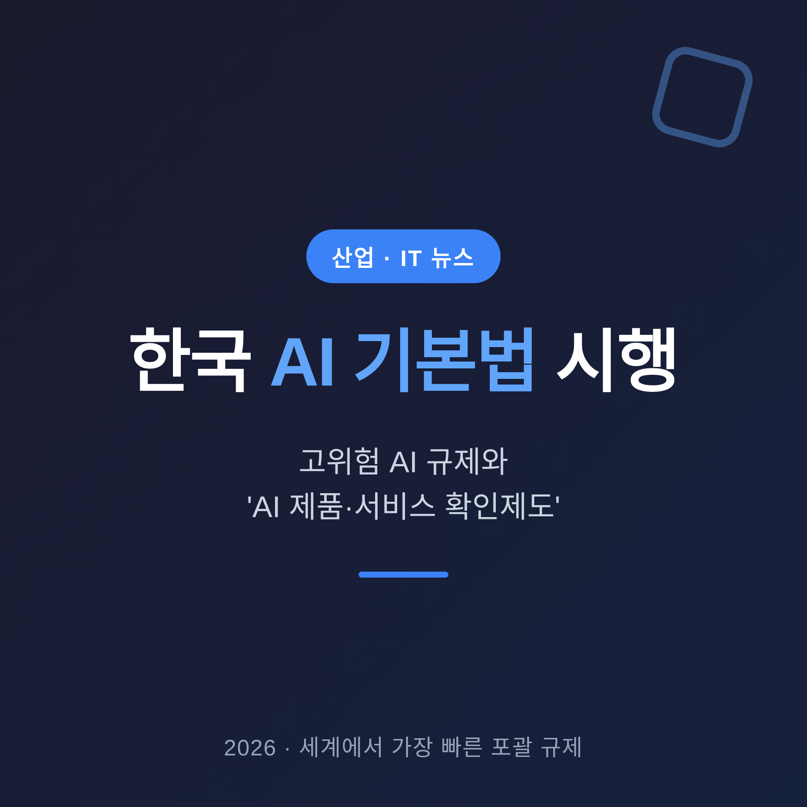
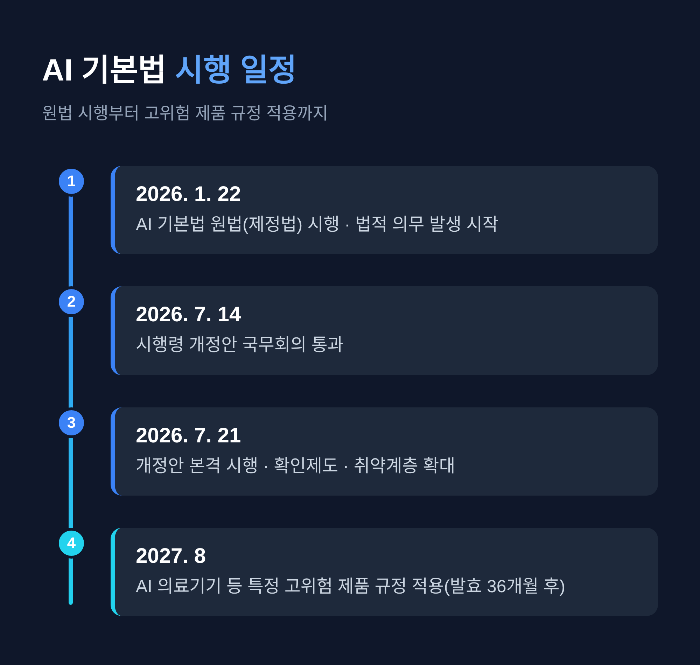
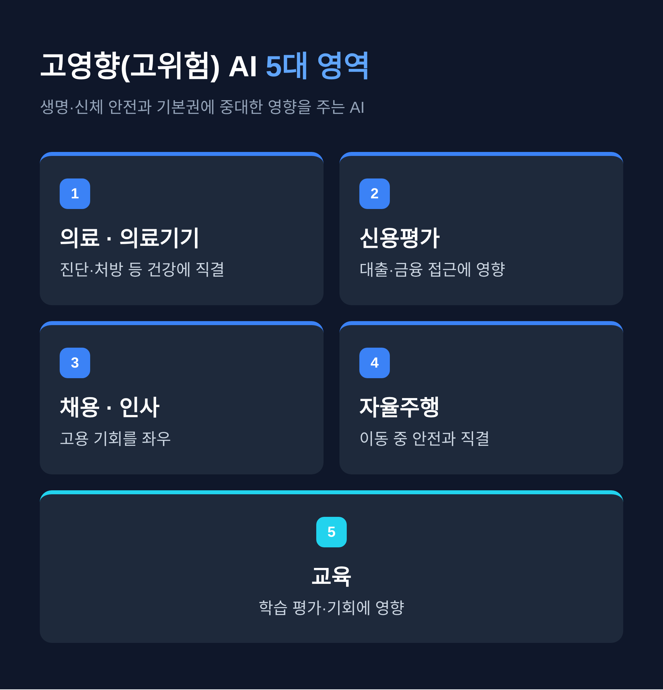
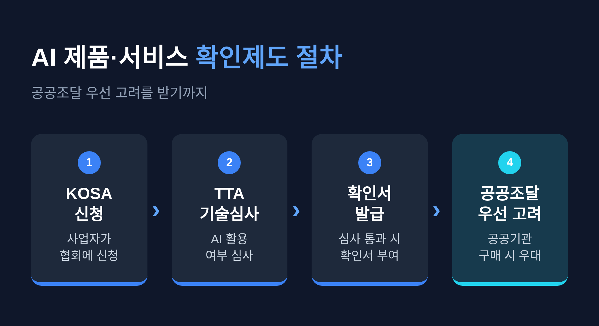
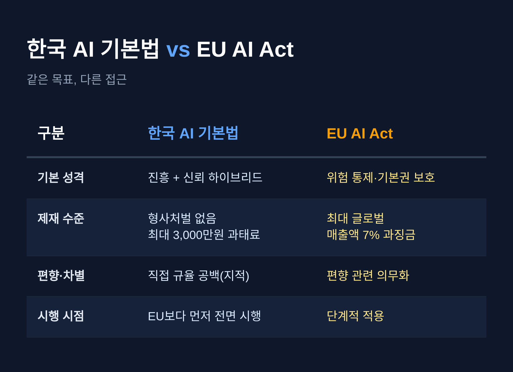
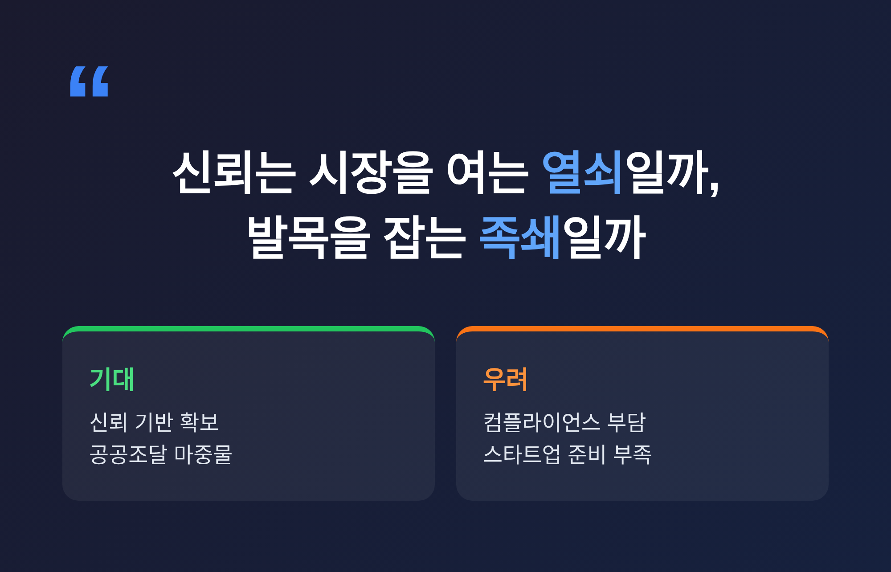

이번 글에서는 2026년 본격 시행에 들어간 한국 'AI 기본법'을 정리해 보겠습니다. 무엇이 규제되고, 새로 생긴 'AI 제품·서비스 확인제도'가 무엇이며, 기업에는 어떤 부담과 기회가 생기는지 차분히 살펴보겠습니다.

한국이 AI를 정면으로 다루는 법을 먼저 켰습니다.
정식 이름은 '인공지능 발전과 신뢰 기반 조성 등에 관한 기본법'입니다. 줄여서 'AI 기본법'이라 부릅니다.
원법은 2026년 1월 22일에 시행됐습니다. 이어 규율을 구체화한 개정안이 7월 21일부터 효력을 냈습니다. 그 사이 7월 14일에는 세부 사항을 담은 시행령 개정안이 국무회의를 통과했습니다.
의미는 분명합니다. 유럽연합의 'AI Act'가 단계적으로 적용되는 사이, 한국은 포괄적인 AI 기본법을 EU보다 먼저 전면 시행한 나라가 됐습니다.
다만 이 법의 결은 순수한 규제법과는 다릅니다. 이름에 '발전'과 '신뢰'가 나란히 들어간 데서 보이듯, 산업을 키우는 진흥과 위험을 다스리는 규율을 한 몸에 담은 하이브리드 성격을 지닙니다.
예전엔 AI가 법의 바깥에 있었습니다. 지금은 법의 안쪽으로 들어왔습니다.

이 법의 무게중심은 '고영향 인공지능'입니다. 언론에서는 '고위험 AI'로도 부릅니다.
정의는 이렇습니다. 사람의 생명과 신체 안전, 그리고 기본권에 중대한 영향을 줄 수 있는 AI입니다.
대표적인 영역은 다섯 가지로 모입니다. 의료 진단과 의료기기, 신용평가, 채용과 인사, 자율주행, 그리고 교육입니다.
판단의 첫 책임은 사업자에게 있습니다. 법과 시행령의 기준을 놓고 사업자가 스스로 자기 서비스가 고영향에 해당하는지를 먼저 가려야 합니다. 다만 최종 결정에 사람이 실질적으로 개입하고 통제할 수 있다면, 대상에서 빠질 여지가 있습니다.

고영향 AI 사업자에게는 몇 가지 의무가 붙습니다.
첫째, 투명성입니다. 서비스 제공 전에 약관 등을 통해 AI가 쓰인다는 사실을 미리 알려야 합니다.
둘째, 표시입니다. 생성형 AI가 만든 결과물에는 워터마크 같은 식별 표식을 달아야 합니다. 딥페이크처럼 사람을 속일 수 있는 콘텐츠에서 특히 중요합니다.
셋째, 위험관리와 안전성 확보입니다. 위험을 미리 관리할 방안을 마련하고, 서비스의 신뢰성을 지켜야 합니다.
넷째, 기록입니다. 관련 사항을 5년 동안 남겨 두어야 합니다.
의무가 가볍지는 않습니다. 그러나 낯선 요구도 아닙니다. 안전과 설명 책임이라는, 이미 다른 산업에서 익숙한 원칙을 AI로 옮겨온 셈입니다.
이번 시행에서 눈여겨볼 새 제도가 하나 있습니다. 'AI 제품·서비스 확인제도'입니다.
이것은 규제가 아니라 유인책입니다. 공공기관이 물건과 서비스를 살 때, 확인을 받은 AI 제품·서비스를 우선 고려하도록 한 장치입니다.
인정 요건은 형식적이지 않습니다. 'AI의 특성을 가진 연산시스템'이 제품이나 서비스에 실제로 결합돼 있고, 그 시스템이 기능·편의성·접근성·효율성에 진짜로 쓰여야 합니다.
절차는 두 기관을 거칩니다. 먼저 사업자가 한국인공지능·소프트웨어산업협회, 곧 KOSA에 신청합니다. KOSA는 한국정보통신기술협회, TTA에 AI 활용 여부에 대한 기술심사를 요청합니다. 심사를 통과하면 확인서가 나옵니다.

효과는 현실적입니다. 공공조달 시장은 규모가 크고 예측이 가능합니다. 초기 매출이 절실한 국내 AI 기업에는 든든한 마중물이 될 수 있습니다.
여기에 시행령은 다른 지원도 함께 담았습니다. AI 취약계층의 범위에 구직자와 경력보유여성을 새로 넣었습니다. 벤처투자 모태펀드를 활용한 AI 창업 지원, AI연구소 설립·운영의 근거도 마련했습니다.
규제만 있는 법이 아니라는 신호입니다.
규제법이라면 벌칙이 궁금해집니다. 이 대목에서 AI 기본법은 뜻밖에 온건합니다.
형사처벌 조항은 없습니다. 위반이 있어도 곧바로 벌하지 않습니다. 시정명령을 내리고, 그 명령마저 따르지 않은 경우에 한해 최대 3,000만원의 과태료를 매깁니다.
계도기간도 둡니다. 고영향 AI와 안전성·투명성 관련 규율에 대해 최소 1년 이상 사실조사와 과태료 부과를 미룹니다.
다만 오해는 금물입니다. 계도기간은 '준비의 유예'이지 '의무의 유예'가 아닙니다. 법적 의무 자체는 이미 2026년 1월 22일부터 발생하고 있습니다.
시점을 하나 더 기억해 둘 만합니다. AI 의료기기처럼 특정 고위험 제품에 대한 규정은 법 발효 36개월 뒤인 2027년 8월부터 적용됩니다. 준비할 시간이 아직 남아 있는 셈입니다.
한국 AI 기본법은 흔히 유럽연합의 AI Act와 비교됩니다. 두 법의 결은 사뭇 다릅니다.

가장 큰 차이는 목적입니다. EU는 위험을 촘촘히 통제하고 시민의 기본권을 지키는 데 무게를 둡니다. 한국은 진흥과 신뢰를 함께 겨냥합니다.
제재의 강도도 다릅니다. EU는 위반 시 최대 글로벌 매출액의 7%라는 무거운 과징금을 물립니다. 한국의 과태료 3,000만원과는 차원이 다릅니다.
빈 곳도 있습니다. EU가 AI의 편향과 차별을 직접 의무로 다루는 반면, 한국 법은 이를 정면으로 규율하지 않았다는 지적이 나옵니다. 신뢰를 내세운 법으로서는 아쉬운 공백입니다.
그럼에도 한 가지는 분명합니다. 속도만큼은 한국이 앞섰습니다.
산업계의 반응은 한쪽으로 쏠리지 않습니다. 기대와 우려가 나란히 놓여 있습니다.
우려부터 봅니다. 규제가 국내 AI 경쟁력을 위축시킬 수 있다는 걱정입니다. 고영향 여부를 스스로 판단하고, 고지하고, 워터마크를 붙이고, 5년을 기록하는 일은 실무 부담이 됩니다. 한 조사에서는 스타트업의 98%가 '아직 준비되지 않았다'고 답했다는 보도도 있었습니다.

기대도 또렷합니다. 신뢰의 기반이 오히려 시장을 넓힌다는 시각입니다. AI가 못 미덥다는 인식이 걷히면, 의료와 금융처럼 조심스러운 영역에서 도입이 빨라질 수 있습니다. 확인제도가 공공조달의 문을 열어 주는 점도 실질적인 당근입니다.
정부도 완충 장치를 두었습니다. 계도기간을 넉넉히 잡고, 기업 지원데스크를 운영해 '내 서비스가 고영향인가'라는 혼란을 덜어 주려 합니다.
물론 아직 완벽하지는 않습니다. 편향 규율의 공백, 계도기간 종료 시점의 불확실성, EU와 다른 기준을 함께 맞춰야 하는 이중 부담은 앞으로 풀어갈 숙제입니다.
정리하면 이렇습니다.
한국은 AI를 법의 테두리 안으로 가장 먼저 불러들였습니다. 채찍은 세지 않았고, 당근은 공공조달과 창업 지원으로 손에 잡히게 놓였습니다.
관건은 균형입니다.
"규제의 속도가 아니라, 신뢰의 깊이가 결국 산업의 크기를 정한다."
빠르게 켠 이 법이 산업의 발목을 잡을지 등을 밀어줄지 물으신다면, 답은 계도기간이 끝나는 그 지점에서 드러날 것입니다.